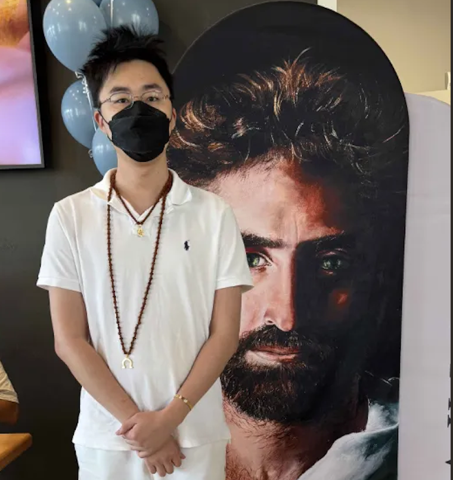

Andrew Wu
I graduated from UT Austin studying Computer Science in 2024. I had Crohn's for almost a year from 2024-2025. I then had more personal journeys to attend to so I could finally focus on seeking for a job. I have had a extremely varied life and am open to giving relationship advice especially for your personal spiritual journeys. I have had various spiritual experiences that normal people would find extremely interesting. Thanks for visiting the site!
I am looking for a software engineering job. I spend my time studying. Currently I'm trying to
study the following topics: electrical engineering, 3d design, and theoretical computer science.
I think these subtopics will be very useful in the future because it is revelation
given to me by the Holy Ghost. The Holy Ghost communicates through me and me through it. The Holy Spirit is my genuine friend.
He is the closest friend I have ever had.
The Holy Ghost has healed me of my Crohn's when I was sick with it in 2025. I was sick for almost a year before it occurred.
This was because I needed to have a proper repentance process.
Message me
if you want to
talk with the Spirit (the Holy Ghost). I am a channel of information from the Holy Spirit to Earth.
The Spirit is less formal with me. I offer only small solutions. No
health or wellness related issues can be solved through me if they are diagnosable
and not of the emotions (trauma). I can tell you what you need to
study for the next two years. This is my biggest spiritual authority on Earth and a service
I am willing to go out of my way for. Let me know. One service I can provide is to pay to fly
those who believe in me out to see if what I am saying is true or not. I am based in Houston but would
like to move to California ideally. If you are interested in this, send me a specific email entailing so and your phone so I can call you.
This website
I got my website design from Jon Barron. I was inspired when I met him at UT Austin a few years ago. I thought it looked beautiful and minimal. I (and Claude) built it following a resource from Jeremy Thomas. I found him as a resource from UW Seattle's Web Design course CSE 154. I try to get my sources from either Caltech or UW Seattle since my brother went to Caltech.
3d printing
My brother introduced me to 3d printing. The Spirit recommends to be wary of the environmental impacts of 3d printing. Use caution when buying expensive printers and filaments that are plastic. Almost all plastics are not environmentally friendly. They leech chemicals into the air and water and cause diseases in the population. The effects are almost minimal in small printers and prints that are not above 3 inches x 3 inches in size. Use the smallest printer possible to reduce impact.
Credits to:
PNG EGG for the website's Pink Panther icon.As a side note, this is the Holy Spirit's favorite cartoon image in my history.
Akiane for the Prince of Peace image and the Belóved Gallery.This Gallery is inspired by the Spirit. Please visit if you can.